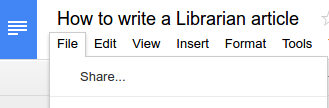
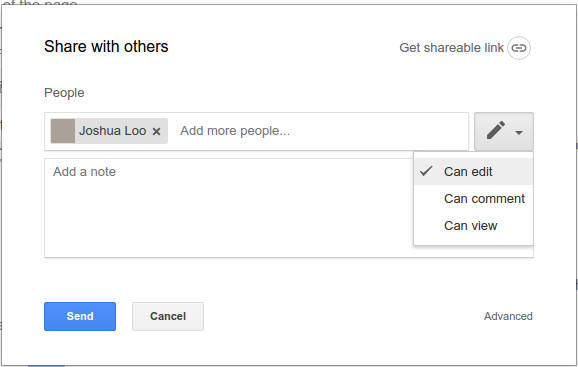

How to write a Librarian article
This is a guide about writing documents in Google Docs. We accept submissions not only in Google Docs, but also in HTML, LaTeX and Markdown. However, because Google Docs documents are different to those formats, you must write your documents in line with a strict set of guidelines, to ensure that we can automatically upload them to our website. To write an article in The Librarian, you must:
- Use the built in text styles. This is very simple - you simply format text using the menu at the top of the page.
- Keep images "in line". You can make sure that images do not mess up formatting by creating a new line, clicking “Insert” and inserting a photo, and leaving a line between paragraphs, images and other images. Do not change anything after that.
Write a few bits of information at the top of the page, like this: {"Author": "Joshua Loo", "Date": "11.11.11", "Category": "Sciences and Mathematics", "Tags": ("Romans", "Piracy", "History")}
The category bit must be one of the following:
Science and Mathematics
Culture
Political economy
Philosophy
You may put any tag in the tags section. We may change your tags slightly to fit with our list of tags at the moment.
Share your article with us.
- Click share.
- Shah.
